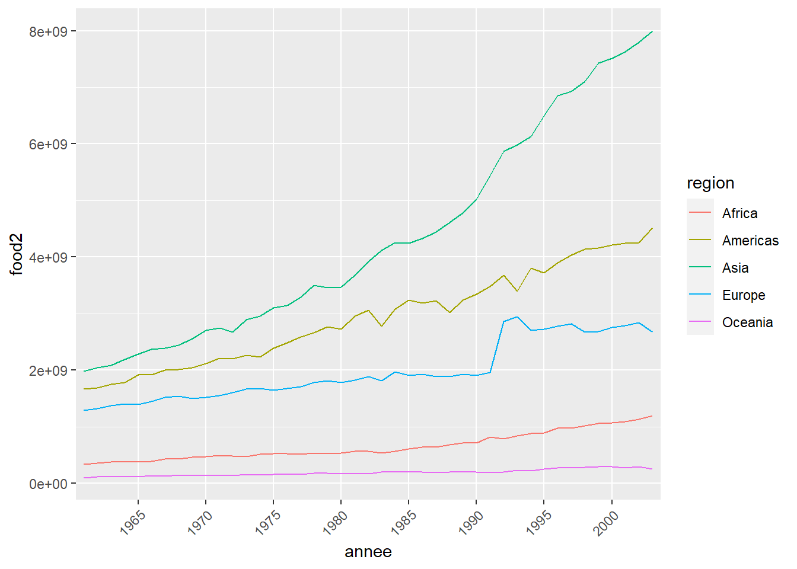
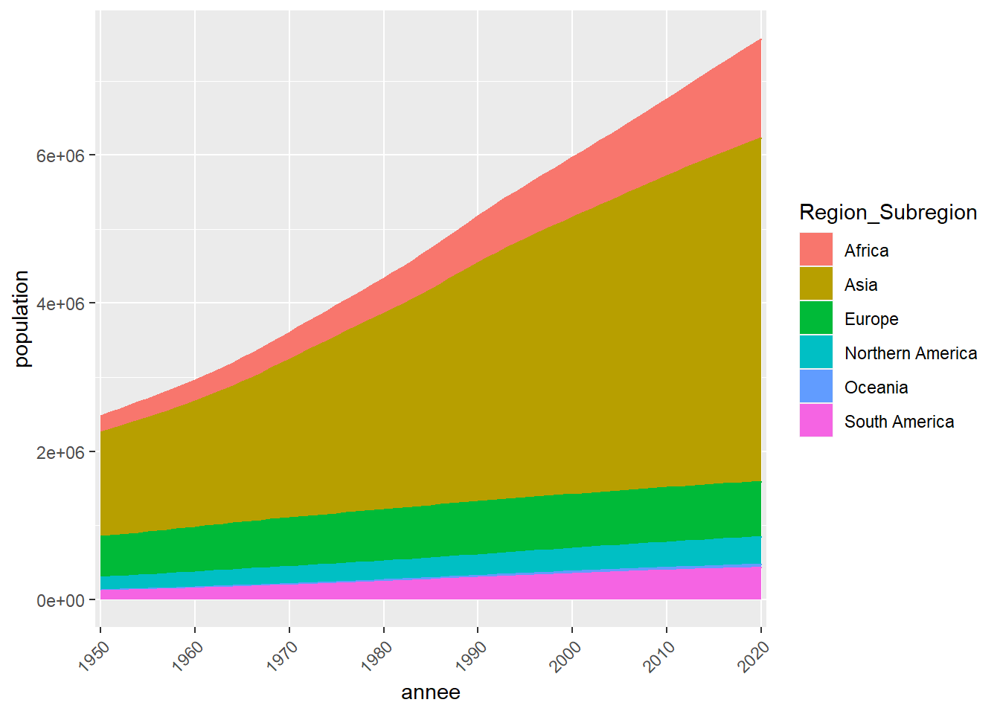

Mini Bookdown Tutorial
1
Analyse du monde
1.0.1
Evolution total de la population par an dans le monde
1.0.2
Evolution total de la production alimentaire par an dans le monde
1.0.3
Energie renouvelable par an dans le monde
1.0.4
Combustible par an dans le monde
2
Analyse par continent
2.0.1
Evolution de la population par continent
2.0.2
Nourriture par continent
2.0.3
Energie par continent
2.1
Lien du Dashboard 3 en ligne
Published with bookdown
Dashboard continent
Dashboard12
Analyse par continent
2.0.1
Evolution de la population par continent

2.0.2
Nourriture par continent

2.0.3
Energie par continent
2.1
Lien du Dashboard 3 en ligne
lien :
https://cgvisu.shinyapps.io/Dashboard_3/